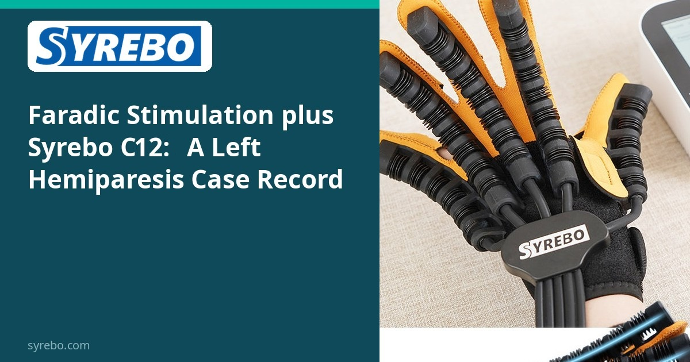
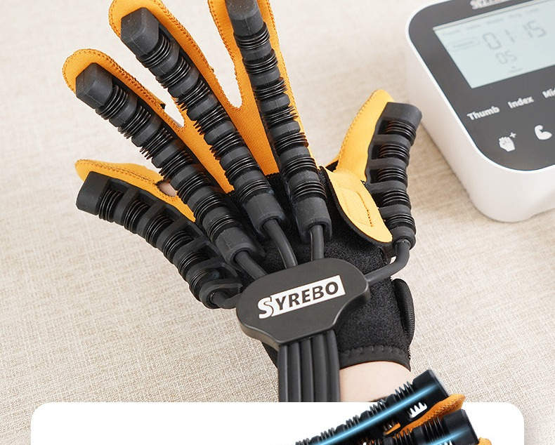

Kolom Riset Klinis Syrebo
Ulasan berbasis bukti tentang penelitian rehabilitasi robotik tangan
Dari artikel
Rehabilitation of Left-Sided Hemiparesis Post-MCA Infarction Using Faradic Electrical Stimulation and Robotic Hand Rehabilitation: A Case Report
Prabhu C, Mohan P, Sajjana D
International Journal of Physiotherapy Research and Clinical Practice, 2025, 4(2): 27-30
IJPRCP, 2025, 4(2): 27-30


Tangan hemiparetik kadang diberi dua masukan sekaligus: stimulasi listrik yang diarahkan ke otot, dan tangan robotik untuk membuka serta menutup jari. Laporan kasus tahun 2025 di International Journal of Physiotherapy Research and Clinical Practice menjelaskan empat minggu stimulasi faradik dan rehabilitasi tangan robotik pada seorang laki-laki dengan hemiparesis kiri. Artikel menyebut perangkat sebagai Syrebo C-12. Ini catatan rencana gabungan, bukan uji khasiat salah satu bagian.
Setelah stroke, klinisi dapat menggunakan stimulasi atau bantuan luar bersama latihan rehabilitasi tangan lainnya. Begitu keduanya dipakai, perubahan sebelum-sesudah tidak dapat diberikan secara bersih kepada salah satu.
Laporan itu tetap berguna. Laporan menjelaskan perangkat dan jadwal terapi, meskipun waktu mulai setelah stroke berbeda antara abstrak dan teks utama. Ia tidak memberi angka, dan tidak memberi perbedaan terhadap kontrol.
Laporan menyebut perangkat robotik sebagai Syrebo C-12. Foto merupakan ilustrasi rehabilitasi tangan Syrebo; kesesuaian modelnya dengan artikel masih perlu diperiksa.
Desain studi
Satu intervensi gabungan: stimulasi faradik bersama latihan tangan robotik Syrebo C-12, seperti disebutkan dalam artikel. Tidak ada kelompok kontrol sejajar.
Sampel dan jadwal
Laki-laki 60 tahun dengan hemiparesis kiri menjalani program empat minggu yang dijadwalkan lima hari seminggu. Abstrak menyebut dimulai tiga bulan dua minggu setelah stroke, sedangkan teks utama menyebut satu bulan satu minggu; perbedaan ini perlu diperjelas.
Temuan utama
Halaman ini tidak mencetak ulang skor fungsi yang belum diperiksa terhadap artikel untuk rubrik. Yang jelas adalah susunannya: stimulasi dan latihan robotik dipakai bersama, jadi perubahan tidak dapat ditulis sebagai efek C-12 saja atau stimulasi saja.
Catatan ini menjelaskan jadwal empat minggu dengan dua modalitas bersama. Desain kasus tunggal tidak menetapkan efek terapi secara umum.
Satu kasus hemiparesis kiri setelah infark ACM tidak mewakili lesi lain atau waktu lain setelah onset.
Batasan Ini satu kasus dengan intervensi gabungan tanpa kelompok kontrol sejajar. Perubahan tidak dapat dikaitkan dengan salah satu intervensi saja. Waktu mulai setelah stroke dan uraian tes motorik dalam laporan perlu diperjelas.